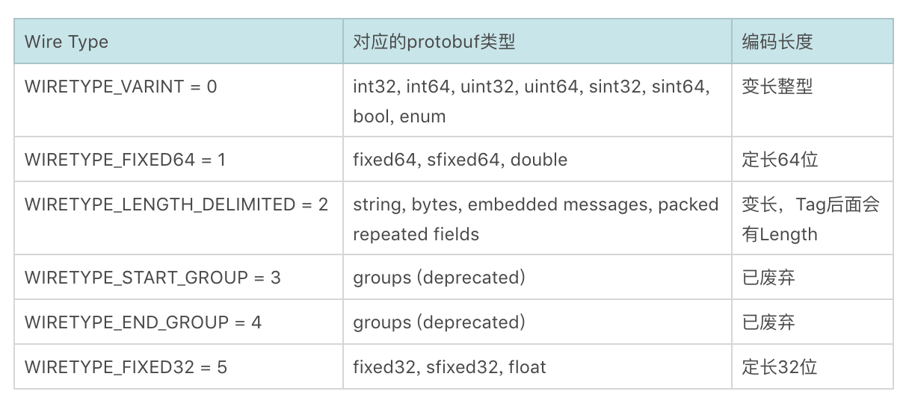

- 00 开篇词 想成为技术牛人？先搞定网络协议！.md.html
- 01 为什么要学习网络协议？.md.html
- 02 网络分层的真实含义是什么？.md.html
- 03 ifconfig：最熟悉又陌生的命令行.md.html
- 04 DHCP与PXE：IP是怎么来的，又是怎么没的？.md.html
- 05 从物理层到MAC层：如何在宿舍里自己组网玩联机游戏？.md.html
- 06 交换机与VLAN：办公室太复杂，我要回学校.md.html
- 07 ICMP与ping：投石问路的侦察兵.md.html
- 08 世界这么大，我想出网关：欧洲十国游与玄奘西行.md.html
- 09 路由协议：西出网关无故人，敢问路在何方.md.html
- 10 UDP协议：因性善而简单，难免碰到“城会玩”.md.html
- 11 TCP协议（上）：因性恶而复杂，先恶后善反轻松.md.html
- 12 TCP协议（下）：西行必定多妖孽，恒心智慧消磨难.md.html
- 13 套接字Socket：Talk is cheap, show me the code.md.html
- 14 HTTP协议：看个新闻原来这么麻烦.md.html
- 15 HTTPS协议：点外卖的过程原来这么复杂.md.html
- 16 流媒体协议：如何在直播里看到美女帅哥？.md.html
- 17 P2P协议：我下小电影，99%急死你.md.html
- 18 DNS协议：网络世界的地址簿.md.html
- 19 HttpDNS：网络世界的地址簿也会指错路.md.html
- 20 CDN：你去小卖部取过快递么？.md.html
- 21 数据中心：我是开发商，自己拿地盖别墅.md.html
- 22 VPN：朝中有人好做官.md.html
- 23 移动网络：去巴塞罗那，手机也上不了脸书.md.html
- 24 云中网络：自己拿地成本高，购买公寓更灵活.md.html
- 25 软件定义网络：共享基础设施的小区物业管理办法.md.html
- 26 云中的网络安全：虽然不是土豪，也需要基本安全和保障.md.html
- 27 云中的网络QoS：邻居疯狂下电影，我该怎么办？.md.html
- 28 云中网络的隔离GRE、VXLAN：虽然住一个小区，也要保护隐私.md.html
- 29 容器网络：来去自由的日子，不买公寓去合租.md.html
- 30 容器网络之Flannel：每人一亩三分地.md.html
- 31 容器网络之Calico：为高效说出善意的谎言.md.html
- 32 RPC协议综述：远在天边，近在眼前.md.html
- 33 基于XML的SOAP协议：不要说NBA，请说美国职业篮球联赛.md.html
- 34 基于JSON的RESTful接口协议：我不关心过程，请给我结果.md.html
- 35 二进制类RPC协议：还是叫NBA吧，总说全称多费劲.md.html
- 36 跨语言类RPC协议：交流之前，双方先来个专业术语表.md.html
- 37 知识串：用双十一的故事串起碎片的网络协议（上）.md.html
- 38 知识串：用双十一的故事串起碎片的网络协议（中）.md.html
- 39 知识串：用双十一的故事串起碎片的网络协议（下）.md.html
- 40 搭建一个网络实验环境：授人以鱼不如授人以渔.md.html
- 加餐1 创作故事：我是如何创作“趣谈网络协议”专栏的？.md.html
- 协议专栏特别福利 答疑解惑1期.md.html
- 协议专栏特别福利 答疑解惑2期.md.html
- 协议专栏特别福利 答疑解惑3期.md.html
- 协议专栏特别福利 答疑解惑4期.md.html
- 协议专栏特别福利 答疑解惑5期.md.html
- 结束语 放弃完美主义，执行力就是限时限量认真完成.md.html
- 捐赠
36 跨语言类RPC协议：交流之前，双方先来个专业术语表
到目前为止，咱们讲了四种RPC，分别是ONC RPC、基于XML的SOAP、基于JSON的RESTful和Hessian2。
通过学习，我们知道，二进制的传输性能好，文本类的传输性能差一些；二进制的难以跨语言，文本类的可以跨语言；要写协议文件的严谨一些，不写协议文件的灵活一些。虽然都有服务发现机制，有的可以进行服务治理，有的则没有。
我们也看到了RPC从最初的客户端服务器模式，最终演进到微服务。对于RPC框架的要求越来越多了，具体有哪些要求呢？
首先，传输性能很重要。因为服务之间的调用如此频繁了，还是二进制的越快越好。
其次，跨语言很重要。因为服务多了，什么语言写成的都有，而且不同的场景适宜用不同的语言，不能一个语言走到底。
最好既严谨又灵活，添加个字段不用重新编译和发布程序。
最好既有服务发现，也有服务治理，就像Dubbo和Spring Cloud一样。
Protocol Buffers
这是要多快好省地建设社会主义啊。理想还是要有的嘛，这里我就来介绍一个向“理想”迈进的GRPC。
GRPC首先满足二进制和跨语言这两条，二进制说明压缩效率高，跨语言说明更灵活。但是又是二进制，又是跨语言，这就相当于两个人沟通，你不但说方言，还说缩略语，人家怎么听懂呢？所以，最好双方弄一个协议约定文件，里面规定好双方沟通的专业术语，这样沟通就顺畅多了。
对于GRPC来讲，二进制序列化协议是Protocol Buffers。首先，需要定义一个协议文件.proto。
我们还看买极客时间专栏的这个例子。
syntax = “proto3”;
package com.geektime.grpc
option java_package = “com.geektime.grpc”;
message Order {
required string date = 1;
required string classname = 2;
required string author = 3;
required int price = 4;
}
message OrderResponse {
required string message = 1;
}
service PurchaseOrder {
rpc Purchase (Order) returns (OrderResponse) {}
}
在这个协议文件中，我们首先指定使用proto3的语法，然后我们使用Protocol Buffers的语法，定义两个消息的类型，一个是发出去的参数，一个是返回的结果。里面的每一个字段，例如date、classname、author、price都有唯一的一个数字标识，这样在压缩的时候，就不用传输字段名称了，只传输这个数字标识就行了，能节省很多空间。
最后定义一个Service，里面会有一个RPC调用的声明。
无论使用什么语言，都有相应的工具生成客户端和服务端的Stub程序，这样客户端就可以像调用本地一样，调用远程的服务了。
协议约定问题
Protocol Buffers是一款压缩效率极高的序列化协议，有很多设计精巧的序列化方法。
对于int类型32位的，一般都需要4个Byte进行存储。在Protocol Buffers中，使用的是变长整数的形式。对于每一个Byte的8位，最高位都有特殊的含义。
如果该位为 1，表示这个数字没完，后续的Byte也属于这个数字；如果该位为 0，则这个数字到此结束。其他的7个Bit才是用来表示数字的内容。因此，小于128的数字都可以用一个Byte表示；大于128的数字，比如130，会用两个字节来表示。
对于每一个字段，使用的是TLV（Tag，Length，Value）的存储办法。
其中Tag = (field_num << 3) | wire_type。field_num就是在proto文件中，给每个字段指定唯一的数字标识，而wire_type用于标识后面的数据类型。

例如，对于string author = 3，在这里field_num为3，string的wire_type为2，于是 (field_num << 3) | wire_type = (11000) | 10 = 11010 = 26；接下来是Length，最后是Value为“liuchao”，如果使用UTF-8编码，长度为7个字符，因而Length为7。
可见，在序列化效率方面，Protocol Buffers简直做到了极致。
在灵活性方面，这种基于协议文件的二进制压缩协议往往存在更新不方便的问题。例如，客户端和服务器因为需求的改变需要添加或者删除字段。
这一点上，Protocol Buffers考虑了兼容性。在上面的协议文件中，每一个字段都有修饰符。比如：
required：这个值不能为空，一定要有这么一个字段出现；
optional：可选字段，可以设置，也可以不设置，如果不设置，则使用默认值；
repeated：可以重复0到多次。
如果我们想修改协议文件，对于赋给某个标签的数字，例如string author=3，这个就不要改变了，改变了就不认了；也不要添加或者删除required字段，因为解析的时候，发现没有这个字段就会报错。对于optional和repeated字段，可以删除，也可以添加。这就给了客户端和服务端升级的可能性。
例如，我们在协议里面新增一个string recommended字段，表示这个课程是谁推荐的，就将这个字段设置为optional。我们可以先升级服务端，当客户端发过来消息的时候，是没有这个值的，将它设置为一个默认值。我们也可以先升级客户端，当客户端发过来消息的时候，是有这个值的，那它将被服务端忽略。
至此，我们解决了协议约定的问题。
网络传输问题
接下来，我们来看网络传输的问题。
如果是Java技术栈，GRPC的客户端和服务器之间通过Netty Channel作为数据通道，每个请求都被封装成HTTP 2.0的Stream。
Netty是一个高效的基于异步IO的网络传输框架，这个上一节我们已经介绍过了。HTTP 2.0在[第14讲]，我们也介绍过。HTTP 2.0协议将一个TCP的连接，切分成多个流，每个流都有自己的ID，而且流是有优先级的。流可以是客户端发往服务端，也可以是服务端发往客户端。它其实只是一个虚拟的通道。
HTTP 2.0还将所有的传输信息分割为更小的消息和帧，并对它们采用二进制格式编码。
通过这两种机制，HTTP 2.0的客户端可以将多个请求分到不同的流中，然后将请求内容拆成帧，进行二进制传输。这些帧可以打散乱序发送， 然后根据每个帧首部的流标识符重新组装，并且可以根据优先级，决定优先处理哪个流的数据。

由于基于HTTP 2.0，GRPC和其他的RPC不同，可以定义四种服务方法。
第一种，也是最常用的方式是单向RPC，即客户端发送一个请求给服务端，从服务端获取一个应答，就像一次普通的函数调用。
rpc SayHello(HelloRequest) returns (HelloResponse){}
第二种方式是服务端流式RPC，即服务端返回的不是一个结果，而是一批。客户端发送一个请求给服务端，可获取一个数据流用来读取一系列消息。客户端从返回的数据流里一直读取，直到没有更多消息为止。
rpc LotsOfReplies(HelloRequest) returns (stream HelloResponse){}
第三种方式为客户端流式RPC，也即客户端的请求不是一个，而是一批。客户端用提供的一个数据流写入并发送一系列消息给服务端。一旦客户端完成消息写入，就等待服务端读取这些消息并返回应答。
rpc LotsOfGreetings(stream HelloRequest) returns (HelloResponse) {}
第四种方式为双向流式 RPC，即两边都可以分别通过一个读写数据流来发送一系列消息。这两个数据流操作是相互独立的，所以客户端和服务端能按其希望的任意顺序读写，服务端可以在写应答前等待所有的客户端消息，或者它可以先读一个消息再写一个消息，或者读写相结合的其他方式。每个数据流里消息的顺序会被保持。
rpc BidiHello(stream HelloRequest) returns (stream HelloResponse){}
如果基于HTTP 2.0，客户端和服务器之间的交互方式要丰富得多，不仅可以单方向远程调用，还可以实现当服务端状态改变的时候，主动通知客户端。
至此，传输问题得到了解决。
服务发现与治理问题
最后是服务发现与服务治理的问题。
GRPC本身没有提供服务发现的机制，需要借助其他的组件，发现要访问的服务端，在多个服务端之间进行容错和负载均衡。
其实负载均衡本身比较简单，LVS、HAProxy、Nginx都可以做，关键问题是如何发现服务端，并根据服务端的变化，动态修改负载均衡器的配置。
在这里我们介绍一种对于GRPC支持比较好的负载均衡器Envoy。其实Envoy不仅仅是负载均衡器，它还是一个高性能的C++写的Proxy转发器，可以配置非常灵活的转发规则。
这些规则可以是静态的，放在配置文件中的，在启动的时候加载。要想重新加载，一般需要重新启动，但是Envoy支持热加载和热重启，这在一定程度上缓解了这个问题。
当然，最好的方式是将规则设置为动态的，放在统一的地方维护。这个统一的地方在Envoy眼中被称为服务发现（Discovery Service），过一段时间去这里拿一下配置，就修改了转发策略。
无论是静态的，还是动态的，在配置里面往往会配置四个东西。
第一个是listener。Envoy既然是Proxy，专门做转发，就得监听一个端口，接入请求，然后才能够根据策略转发，这个监听的端口就称为listener。
第二个是endpoint，是目标的IP地址和端口。这个是Proxy最终将请求转发到的地方。
第三个是cluster。一个cluster是具有完全相同行为的多个endpoint，也即如果有三个服务端在运行，就会有三个IP和端口，但是部署的是完全相同的三个服务，它们组成一个cluster，从cluster到endpoint的过程称为负载均衡，可以轮询。
第四个是route。有时候多个cluster具有类似的功能，但是是不同的版本号，可以通过route规则，选择将请求路由到某一个版本号，也即某一个cluster。
如果是静态的，则将后端的服务端的IP地址拿到，然后放在配置文件里面就可以了。
如果是动态的，就需要配置一个服务发现中心，这个服务发现中心要实现Envoy的API，Envoy可以主动去服务发现中心拉取转发策略。

看来，Envoy进程和服务发现中心之间要经常相互通信，互相推送数据，所以Envoy在控制面和服务发现中心沟通的时候，就可以使用GRPC，也就天然具备在用户面支撑GRPC的能力。
Envoy如果复杂的配置，都能干什么事呢？
一种常见的规则是配置路由策略。例如后端的服务有两个版本，可以通过配置Envoy的route，来设置两个版本之间，也即两个cluster之间的route规则，一个占99%的流量，一个占1%的流量。
另一种常见的规则就是负载均衡策略。对于一个cluster下的多个endpoint，可以配置负载均衡机制和健康检查机制，当服务端新增了一个，或者挂了一个，都能够及时配置Envoy，进行负载均衡。

所有这些节点的变化都会上传到注册中心，所有这些策略都可以通过注册中心进行下发，所以，更严格的意义上讲，注册中心可以称为注册治理中心。
Envoy这么牛，是不是能够将服务之间的相互调用全部由它代理？如果这样，服务也不用像Dubbo，或者Spring Cloud一样，自己感知到注册中心，自己注册，自己治理，对应用干预比较大。
如果我们的应用能够意识不到服务治理的存在，就可以直接进行GRPC的调用。
这就是未来服务治理的趋势Serivce Mesh，也即应用之间的相互调用全部由Envoy进行代理，服务之间的治理也被Envoy进行代理，完全将服务治理抽象出来，到平台层解决。
- 至此RPC框架中有治理功能的Dubbo、Spring Cloud、Service Mesh就聚齐了。
小结
好了，这一节就到这里了，我们来总结一下。
GRPC是一种二进制，性能好，跨语言，还灵活，同时可以进行服务治理的多快好省的RPC框架，唯一不足就是还是要写协议文件。
GRPC序列化使用Protocol Buffers，网络传输使用HTTP 2.0，服务治理可以使用基于Envoy的Service Mesh。
最后，给你留一个思考题吧。
在讲述Service Mesh的时候，我们说了，希望Envoy能够在服务不感知的情况下，将服务之间的调用全部代理了，你知道怎么做到这一点吗？
我们《趣谈网络协议》专栏已经接近尾声了。你还记得专栏开始，我们讲过的那个“双十一”下单的故事吗？
下节开始，我会将这个过程涉及的网络协议细节，全部串联起来，给你还原一个完整的网络协议使用场景。信息量会很大，做好准备哦，我们下期见！
© 2019 - 2023 Liangliang Lee. Powered by gin and hexo-theme-book.